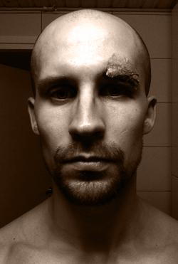

 SoundCloud
SoundCloudDJ Autopsy got interested in dnb around 1996 and was later compelled by darker vibes introduced by such artist as Jonny L, Illfingas and Bad Company, which he still enjoys to play.
Back in the days he was actively involved in organizing ug dnb events in Hyvinkää from around 1997 till 2000 together with DJ Scientific. They also hosted the first, and so far the last, monthly dnb nights in hotel Rantasipi in 1999, with such visiting artists as DJ Control, Karri K and Mekaanikko.
Nowadays DJ Autopsy is much less active, but occasionally appears behind the decks when oldschool techstep sounds are called for.